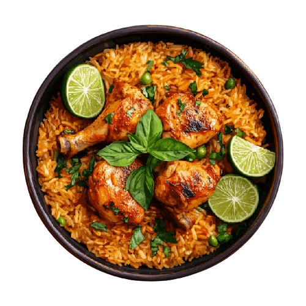
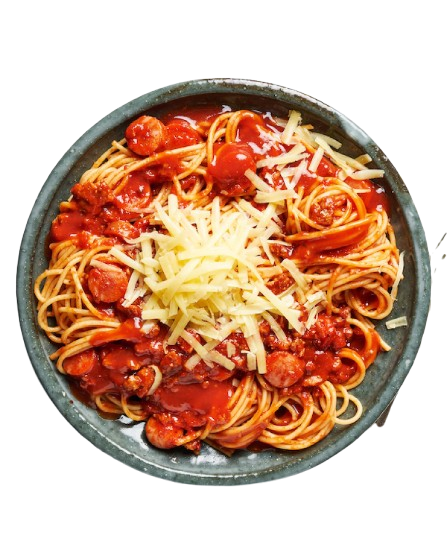
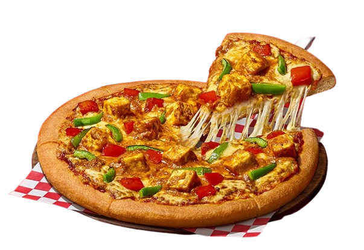
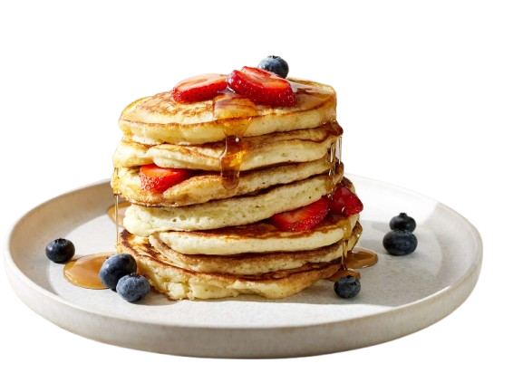

BITE & BLOOM RESTAURANT
Our Dish Menu

Chicken Biryani
PRICE: RS.160
A flavorful Indian rice dish made with marinated chicken, fragrant basmati rice, and a blend of aromatic spices. It often includes layers of chicken, rice, and caramelized onions, all cooked together to create a delicious and aromatic dish.
ORDER
Chicken Cheese Burger
PRICE: RS.80
Typically features a chicken patty, either grilled or fried, topped with melted cheese, and served on a bun with standard burger toppings like lettuce, tomato, and perhaps some sauce. The cheese is often cheddar or American. It's a popular and satisfying meal, combining the savory flavors of chicken and cheese with the classic burger experience.
ORDER

Spaghetti
PRICE: RS.200
A long, thin, solid, cylindrical pasta, traditionally made from milled wheat, water, and sometimes enriched with vitamins and minerals. It's a staple in Italian cuisine and is known for its versatility in pairing with various sauces and ingredients.
ORDER

Pizza
PRICE: RS.150
A baked Italian dish consisting of a flattened, usually round, bread base topped with savory ingredients. Typically, it includes a tomato sauce, cheese (often mozzarella), and various toppings like meat, vegetables, and herbs.
ORDER

Pan-Cake
PRICE: RS.205
A flat, round cake made from a batter of flour, eggs, and milk, typically fried on both sides. It's often eaten hot, with sweet toppings like syrup or fruit, or savory fillings.
ORDER